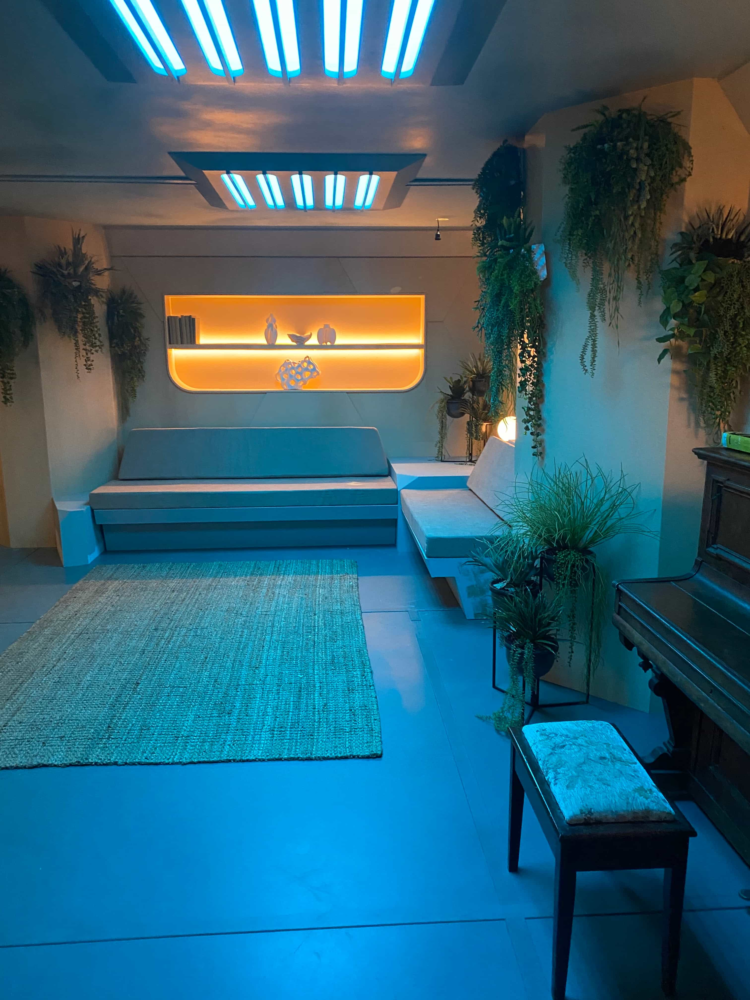
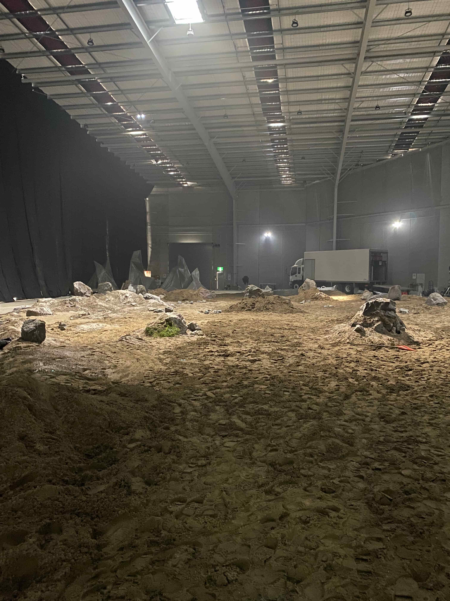
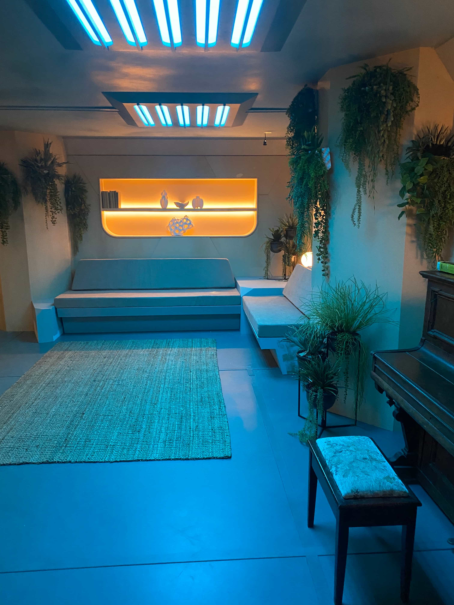
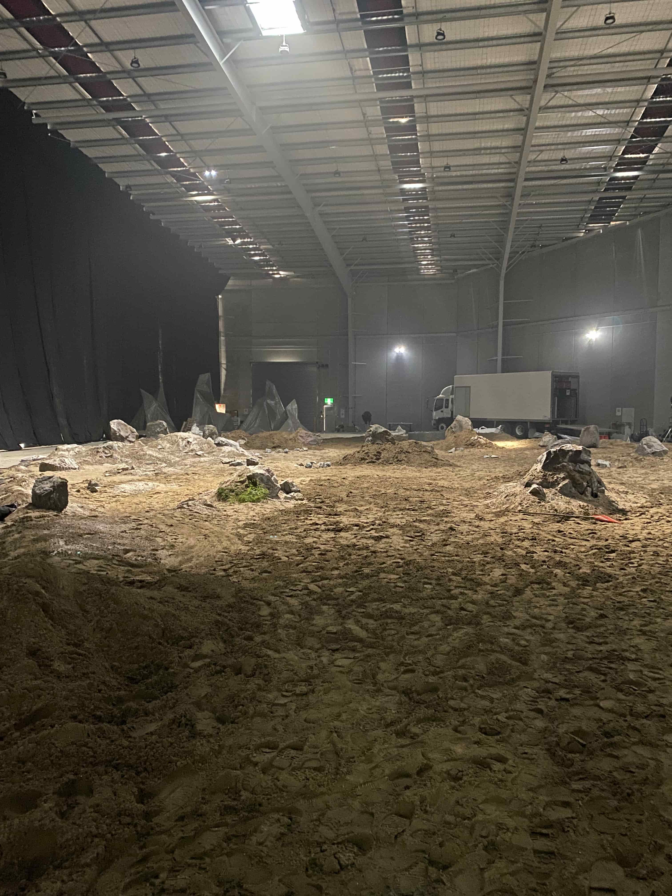
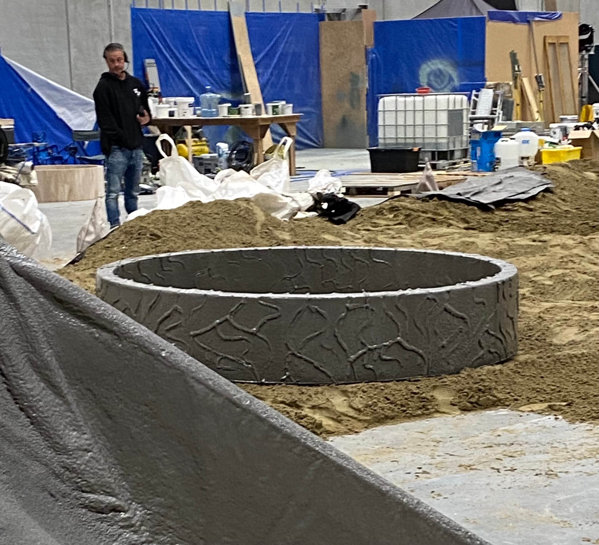
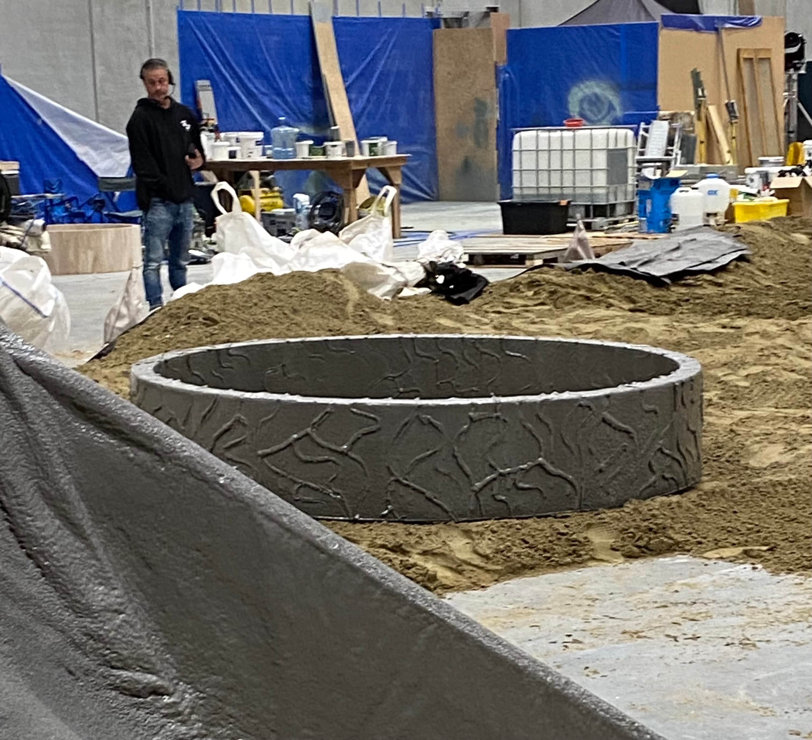

Ash (2025)
Ash is an international Amazon production directed by Flying Lotus. I worked as the runner for the Art Department and was responsible for sourcing all materials on a tight budget. Long hours with excellent communication and the ability to make snap decisions were a prerequisite.
As time progressed, I worked with other departments including set dec, greens, props, and on set props. Tight budgeting allowed me to be very involved in the process of the film, helping with building the sets & decorating them on numerous occasions.
I was responsible for the majority of the final wrap, helping to organise and deal with all remaining props & set decoration items at the end of the production.
 



 
